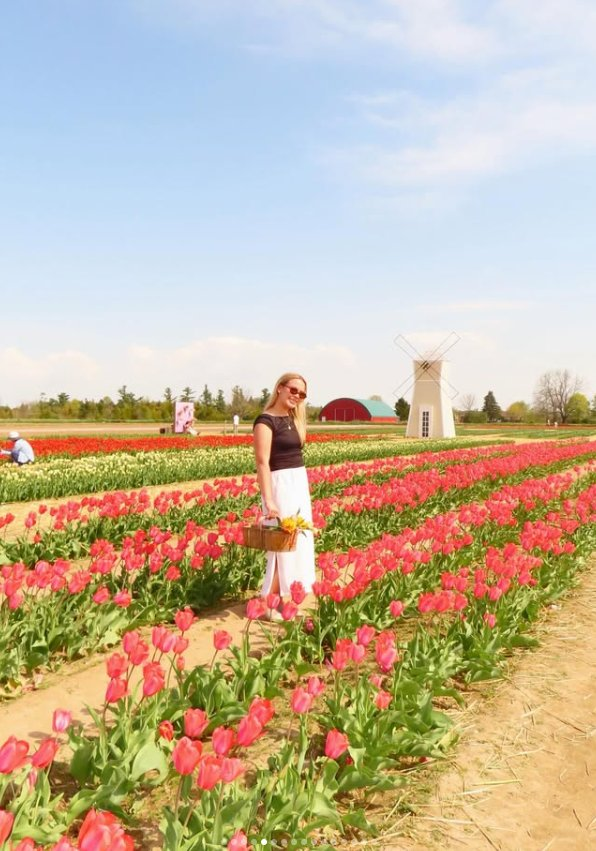
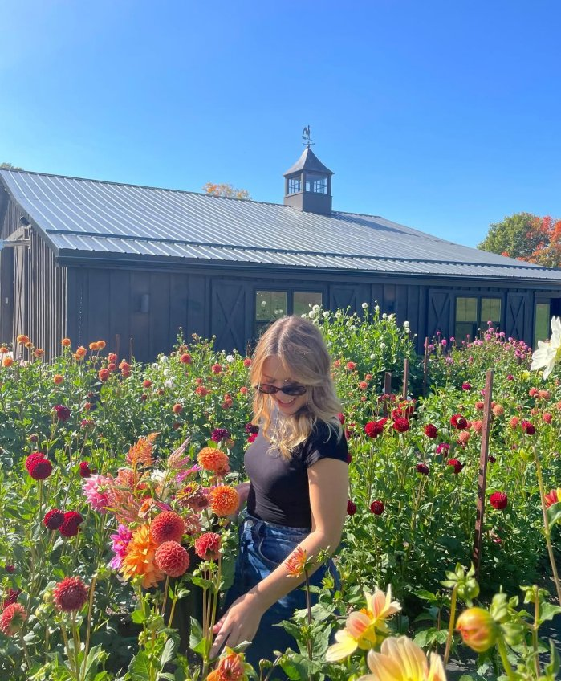
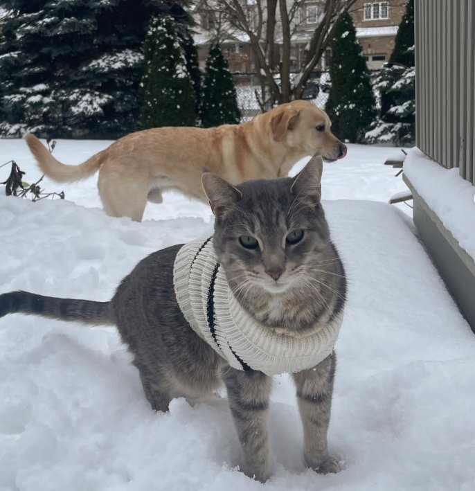
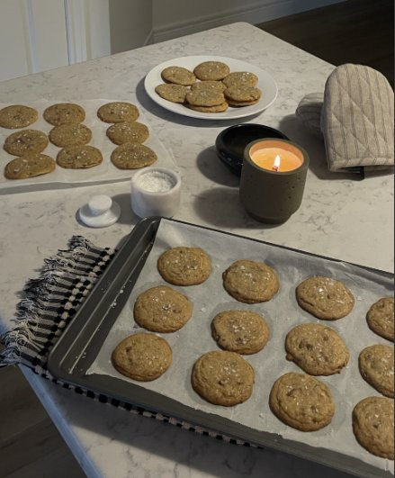
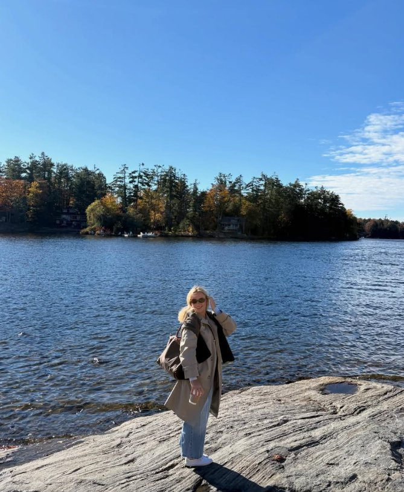

Selected Work
Three projects, three flowers
Each project in this portfolio grows from a seed: a first idea, developed through research and drawing into a finished interior. Plant a seed in the garden to watch a project bloom, or open one below.
An Interactive Portfolio Garden
Avery Hearder
Interior Design Portfolio
Enter the GardenSelected Work
Each project in this portfolio grows from a seed: a first idea, developed through research and drawing into a finished interior. Plant a seed in the garden to watch a project bloom, or open one below.
From the sketchbook
hello & welcome to my garden ✿
I’m Avery Hearder, a fourth-year Honours Bachelor of Interior Design student at Georgian College. I’m drawn to the way thoughtful interiors can shape everyday life, from how a space functions to how it feels to spend time in. I enjoy exploring materiality, space planning, and the small details that make an interior feel considered, comfortable, and welcoming.
I believe interior design is about more than creating beautiful spaces. It’s about understanding how people live, what makes them feel comfortable, and how thoughtful design can make everyday experiences better.
I’m drawn to the process behind a finished space — the questions, sketches, research, collaboration and little decisions that bring an idea to life.
A Day in Bloom reflects that approach. Just like a garden, good design takes curiosity, care and time to grow.

Main portrait
Flower field photoStudies & skills
Honours Bachelor of Interior Design
Georgian College
Fourth-Year Student

Dog & cat photoLittle things I love
a few favourite things ✿
from Avery’s kitchen

on repeat: Taylor Swift
& a little country ♪
tap the record for music ♪
A note tucked inside

Muskoka photoFrom the mailbox
Have a project, opportunity, or question in mind? I’d love to hear from you.
the rowboat is waiting at the dock ♡
welcome back ♡ your little wishes are right where you left them.